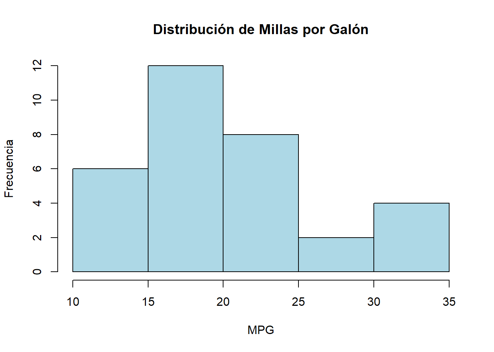
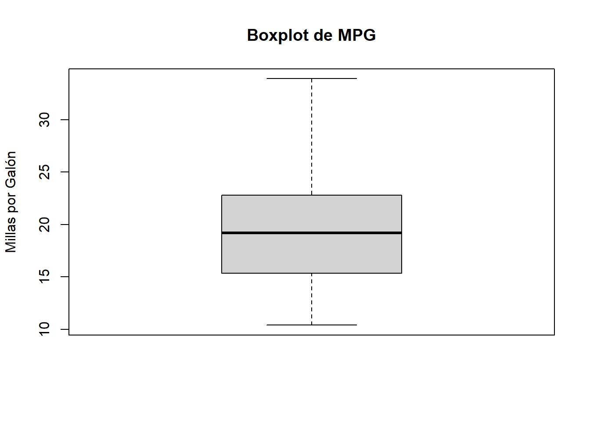
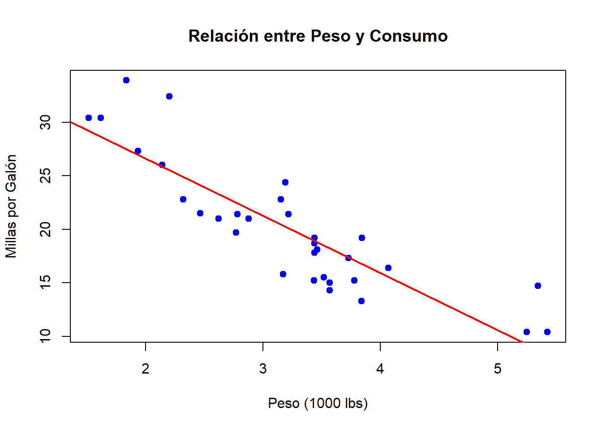
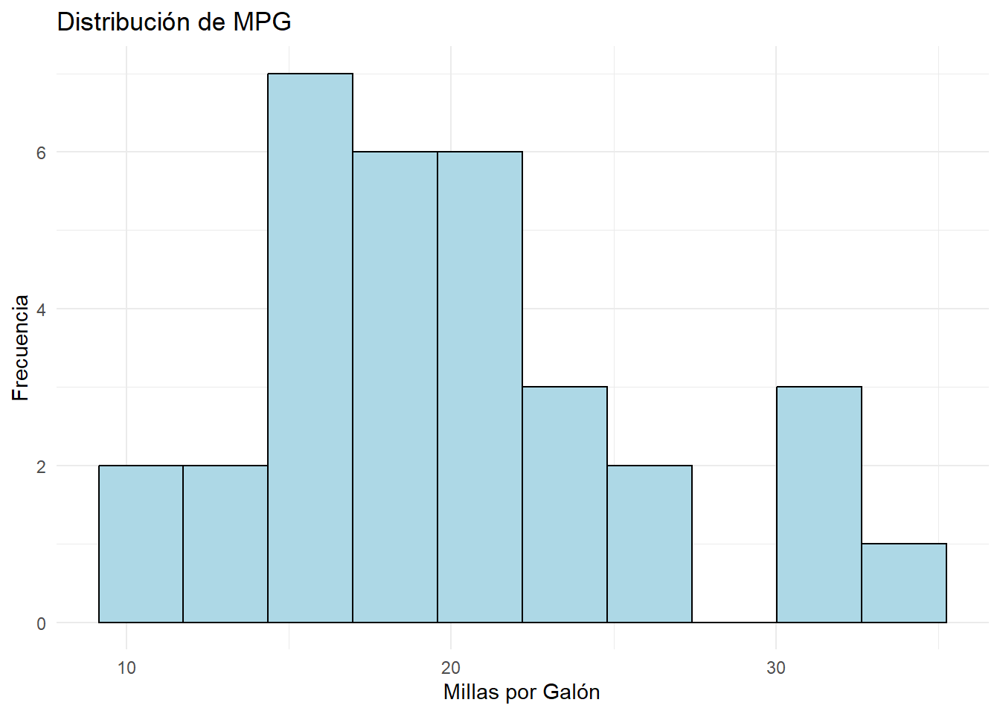
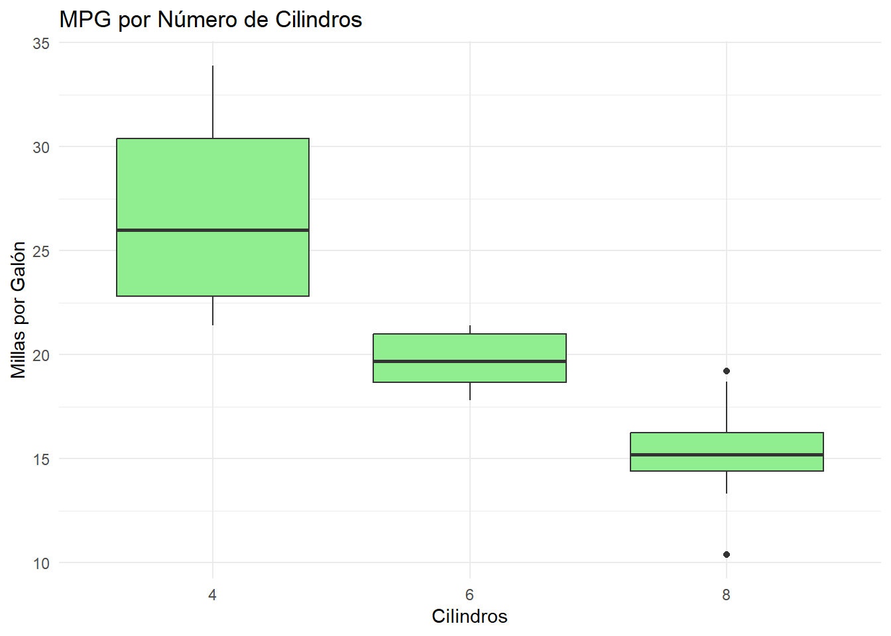
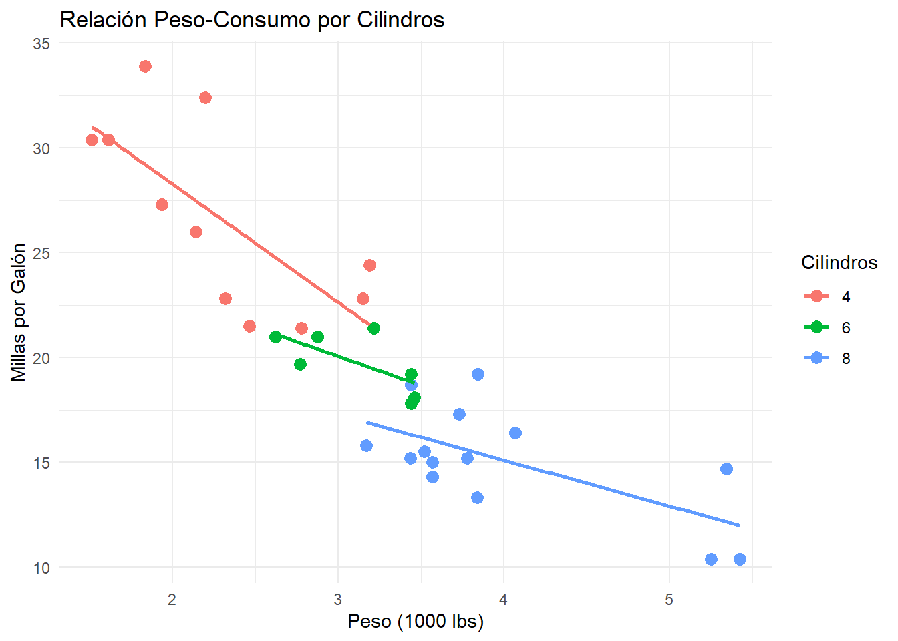
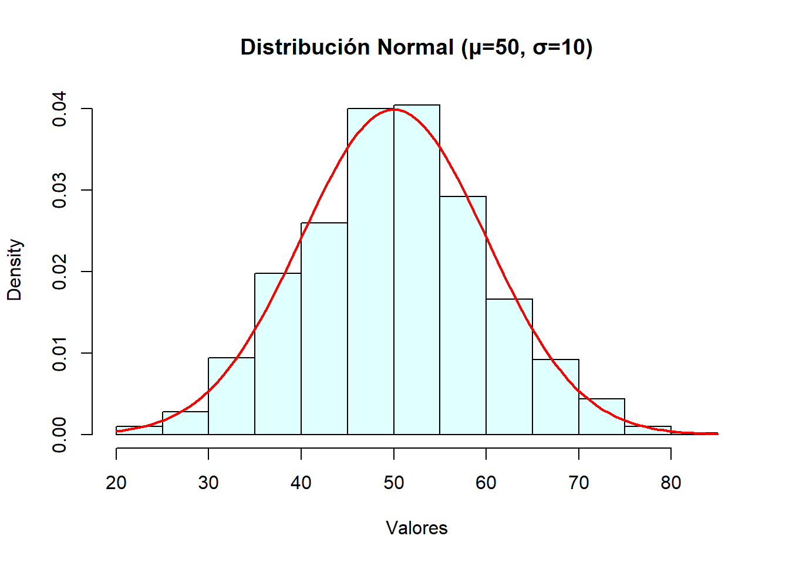
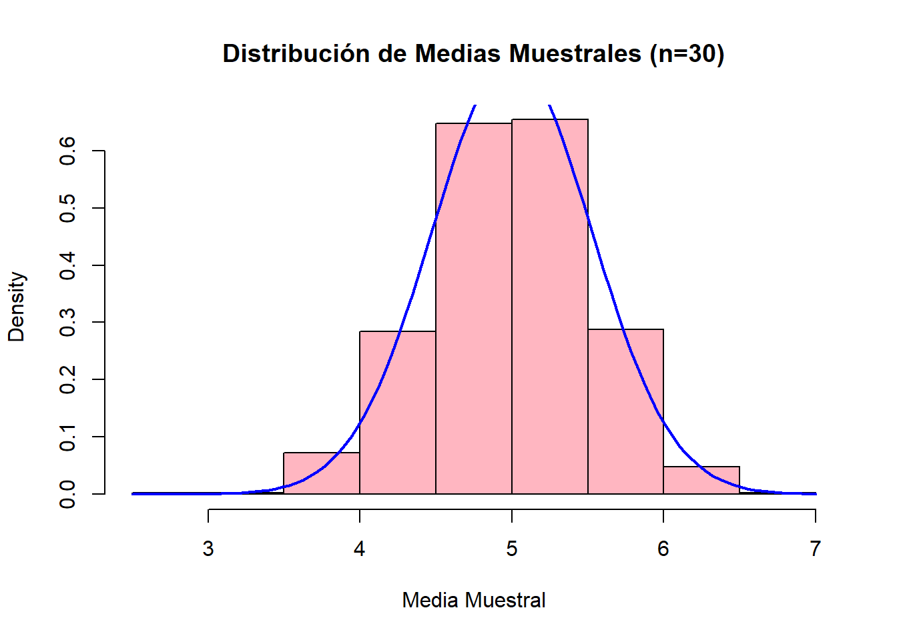

# Instalar paquetes si no los tienes (ejecuta solo una vez)
# install.packages(c("tidyverse", "MASS", "corrplot", "ggplot2"))
# Cargar librerías
library(tidyverse)
library(MASS)
library(corrplot)
library(ggplot2)
# Configurar para resultados reproducibles
set.seed(123)Laboratorio 1: Introducción a R y Análisis Estadístico
Modelos Estadísticos de Predicción
Objetivos del Laboratorio
Al finalizar este laboratorio, serás capaz de:
- Familiarizarte con el entorno de R y RStudio
- Realizar análisis exploratorio de datos básico
- Calcular estadísticas descriptivas
- Crear visualizaciones informativas
- Entender conceptos fundamentales de probabilidad y estadística
Parte 1: Configuración Inicial
Librerías necesarias
Familiarización con R
# Operaciones básicas
2 + 3[1] 510 * 5[1] 50sqrt(16)[1] 4# Crear vectores
numeros <- c(1, 2, 3, 4, 5)
nombres <- c("Ana", "Juan", "María", "Carlos")
# Operaciones con vectores
mean(numeros)[1] 3sum(numeros)[1] 15length(nombres)[1] 4# Crear un data frame simple
datos_ejemplo <- data.frame(
nombre = nombres,
edad = c(25, 30, 28, 35),
salario = c(45000, 55000, 48000, 62000)
)
print(datos_ejemplo) nombre edad salario
1 Ana 25 45000
2 Juan 30 55000
3 María 28 48000
4 Carlos 35 62000Parte 2: Análisis Exploratorio de Datos
Dataset: mtcars
# Cargar el dataset mtcars (datos de automóviles)
data(mtcars)
# Exploración básica
head(mtcars) mpg cyl disp hp drat wt qsec vs am gear carb
Mazda RX4 21.0 6 160 110 3.90 2.620 16.46 0 1 4 4
Mazda RX4 Wag 21.0 6 160 110 3.90 2.875 17.02 0 1 4 4
Datsun 710 22.8 4 108 93 3.85 2.320 18.61 1 1 4 1
Hornet 4 Drive 21.4 6 258 110 3.08 3.215 19.44 1 0 3 1
Hornet Sportabout 18.7 8 360 175 3.15 3.440 17.02 0 0 3 2
Valiant 18.1 6 225 105 2.76 3.460 20.22 1 0 3 1str(mtcars)'data.frame': 32 obs. of 11 variables:
$ mpg : num 21 21 22.8 21.4 18.7 18.1 14.3 24.4 22.8 19.2 ...
$ cyl : num 6 6 4 6 8 6 8 4 4 6 ...
$ disp: num 160 160 108 258 360 ...
$ hp : num 110 110 93 110 175 105 245 62 95 123 ...
$ drat: num 3.9 3.9 3.85 3.08 3.15 2.76 3.21 3.69 3.92 3.92 ...
$ wt : num 2.62 2.88 2.32 3.21 3.44 ...
$ qsec: num 16.5 17 18.6 19.4 17 ...
$ vs : num 0 0 1 1 0 1 0 1 1 1 ...
$ am : num 1 1 1 0 0 0 0 0 0 0 ...
$ gear: num 4 4 4 3 3 3 3 4 4 4 ...
$ carb: num 4 4 1 1 2 1 4 2 2 4 ...summary(mtcars) mpg cyl disp hp
Min. :10.40 Min. :4.000 Min. : 71.1 Min. : 52.0
1st Qu.:15.43 1st Qu.:4.000 1st Qu.:120.8 1st Qu.: 96.5
Median :19.20 Median :6.000 Median :196.3 Median :123.0
Mean :20.09 Mean :6.188 Mean :230.7 Mean :146.7
3rd Qu.:22.80 3rd Qu.:8.000 3rd Qu.:326.0 3rd Qu.:180.0
Max. :33.90 Max. :8.000 Max. :472.0 Max. :335.0
drat wt qsec vs
Min. :2.760 Min. :1.513 Min. :14.50 Min. :0.0000
1st Qu.:3.080 1st Qu.:2.581 1st Qu.:16.89 1st Qu.:0.0000
Median :3.695 Median :3.325 Median :17.71 Median :0.0000
Mean :3.597 Mean :3.217 Mean :17.85 Mean :0.4375
3rd Qu.:3.920 3rd Qu.:3.610 3rd Qu.:18.90 3rd Qu.:1.0000
Max. :4.930 Max. :5.424 Max. :22.90 Max. :1.0000
am gear carb
Min. :0.0000 Min. :3.000 Min. :1.000
1st Qu.:0.0000 1st Qu.:3.000 1st Qu.:2.000
Median :0.0000 Median :4.000 Median :2.000
Mean :0.4062 Mean :3.688 Mean :2.812
3rd Qu.:1.0000 3rd Qu.:4.000 3rd Qu.:4.000
Max. :1.0000 Max. :5.000 Max. :8.000 # Dimensiones del dataset
dim(mtcars)[1] 32 11names(mtcars) [1] "mpg" "cyl" "disp" "hp" "drat" "wt" "qsec" "vs" "am" "gear"
[11] "carb"Estadísticas Descriptivas
# Estadísticas para variables numéricas
mean(mtcars$mpg)[1] 20.09062median(mtcars$mpg)[1] 19.2sd(mtcars$mpg)[1] 6.026948var(mtcars$mpg)[1] 36.3241# Cuartiles y rango intercuartílico
quantile(mtcars$mpg) 0% 25% 50% 75% 100%
10.400 15.425 19.200 22.800 33.900 IQR(mtcars$mpg)[1] 7.375# Resumen estadístico completo
summary(mtcars$mpg) Min. 1st Qu. Median Mean 3rd Qu. Max.
10.40 15.43 19.20 20.09 22.80 33.90 # Estadísticas por grupos
aggregate(mpg ~ cyl, data = mtcars, FUN = mean) cyl mpg
1 4 26.66364
2 6 19.74286
3 8 15.10000Visualizaciones Básicas
# Histograma
hist(mtcars$mpg,
main = "Distribución de Millas por Galón",
xlab = "MPG",
ylab = "Frecuencia",
col = "lightblue",
border = "black")
# Boxplot
boxplot(mtcars$mpg,
main = "Boxplot de MPG",
ylab = "Millas por Galón")
# Scatterplot
plot(mtcars$wt, mtcars$mpg,
main = "Relación entre Peso y Consumo",
xlab = "Peso (1000 lbs)",
ylab = "Millas por Galón",
pch = 19,
col = "blue")
# Añadir línea de tendencia
abline(lm(mpg ~ wt, data = mtcars), col = "red", lwd = 2)
Visualizaciones con ggplot2
# Histograma con ggplot2
ggplot(mtcars, aes(x = mpg)) +
geom_histogram(bins = 10, fill = "lightblue", color = "black") +
labs(title = "Distribución de MPG",
x = "Millas por Galón",
y = "Frecuencia") +
theme_minimal()
# Boxplot por grupos
ggplot(mtcars, aes(x = factor(cyl), y = mpg)) +
geom_boxplot(fill = "lightgreen") +
labs(title = "MPG por Número de Cilindros",
x = "Cilindros",
y = "Millas por Galón") +
theme_minimal()
# Scatterplot con colores por grupos
ggplot(mtcars, aes(x = wt, y = mpg, color = factor(cyl))) +
geom_point(size = 3) +
geom_smooth(method = "lm", se = FALSE) +
labs(title = "Relación Peso-Consumo por Cilindros",
x = "Peso (1000 lbs)",
y = "Millas por Galón",
color = "Cilindros") +
theme_minimal()
Parte 3: Conceptos de Probabilidad
Distribuciones de Probabilidad
# Distribución Normal
# Generar datos normales
datos_normales <- rnorm(1000, mean = 50, sd = 10)
# Visualizar
hist(datos_normales, probability = TRUE,
main = "Distribución Normal (μ=50, σ=10)",
xlab = "Valores", col = "lightcyan")
# Añadir curva teórica
curve(dnorm(x, mean = 50, sd = 10), add = TRUE, col = "red", lwd = 2)
# Probabilidades con distribución normal
# P(X < 45)
pnorm(45, mean = 50, sd = 10)[1] 0.3085375# P(40 < X < 60)
pnorm(60, mean = 50, sd = 10) - pnorm(40, mean = 50, sd = 10)[1] 0.6826895# Cuantiles
qnorm(0.95, mean = 50, sd = 10) # Percentil 95[1] 66.44854Simulaciones
# Simulación del Teorema Central del Límite
medias_muestrales <- replicate(1000, {
muestra <- runif(30, min = 0, max = 10) # Distribución uniforme
mean(muestra)
})
# Visualizar las medias muestrales
hist(medias_muestrales, probability = TRUE,
main = "Distribución de Medias Muestrales (n=30)",
xlab = "Media Muestral",
col = "lightpink")
# La distribución de medias debería ser aproximadamente normal
curve(dnorm(x, mean = 5, sd = sqrt(10^2/12/30)), add = TRUE, col = "blue", lwd = 2)
# Estadísticas de las medias muestrales
cat("Media de las medias muestrales:", mean(medias_muestrales), "\n")Media de las medias muestrales: 4.978945 cat("Desviación estándar de las medias:", sd(medias_muestrales), "\n")Desviación estándar de las medias: 0.5342006 cat("Error estándar teórico:", sqrt(10^2/12/30), "\n")Error estándar teórico: 0.5270463 Parte 4: Correlación y Asociación
Análisis de Correlación
# Matriz de correlación
cor_matrix <- cor(mtcars)
print(round(cor_matrix, 2)) mpg cyl disp hp drat wt qsec vs am gear carb
mpg 1.00 -0.85 -0.85 -0.78 0.68 -0.87 0.42 0.66 0.60 0.48 -0.55
cyl -0.85 1.00 0.90 0.83 -0.70 0.78 -0.59 -0.81 -0.52 -0.49 0.53
disp -0.85 0.90 1.00 0.79 -0.71 0.89 -0.43 -0.71 -0.59 -0.56 0.39
hp -0.78 0.83 0.79 1.00 -0.45 0.66 -0.71 -0.72 -0.24 -0.13 0.75
drat 0.68 -0.70 -0.71 -0.45 1.00 -0.71 0.09 0.44 0.71 0.70 -0.09
wt -0.87 0.78 0.89 0.66 -0.71 1.00 -0.17 -0.55 -0.69 -0.58 0.43
qsec 0.42 -0.59 -0.43 -0.71 0.09 -0.17 1.00 0.74 -0.23 -0.21 -0.66
vs 0.66 -0.81 -0.71 -0.72 0.44 -0.55 0.74 1.00 0.17 0.21 -0.57
am 0.60 -0.52 -0.59 -0.24 0.71 -0.69 -0.23 0.17 1.00 0.79 0.06
gear 0.48 -0.49 -0.56 -0.13 0.70 -0.58 -0.21 0.21 0.79 1.00 0.27
carb -0.55 0.53 0.39 0.75 -0.09 0.43 -0.66 -0.57 0.06 0.27 1.00# Visualización de la matriz de correlación
corrplot(cor_matrix, method = "color", type = "upper",
order = "hclust", tl.cex = 0.8, tl.col = "black")
# Correlaciones específicas
cor(mtcars$mpg, mtcars$wt)[1] -0.8676594cor(mtcars$hp, mtcars$qsec)[1] -0.7082234# Test de correlación
cor.test(mtcars$mpg, mtcars$wt)
Pearson's product-moment correlation
data: mtcars$mpg and mtcars$wt
t = -9.559, df = 30, p-value = 1.294e-10
alternative hypothesis: true correlation is not equal to 0
95 percent confidence interval:
-0.9338264 -0.7440872
sample estimates:
cor
-0.8676594 Análisis de Variables Categóricas
# Crear versión categórica de algunas variables
mtcars$cyl_cat <- factor(mtcars$cyl)
mtcars$am_cat <- factor(mtcars$am, labels = c("Automático", "Manual"))
# Tabla de contingencia
tabla_contingencia <- table(mtcars$cyl_cat, mtcars$am_cat)
print(tabla_contingencia)
Automático Manual
4 3 8
6 4 3
8 12 2# Proporciones
prop.table(tabla_contingencia, margin = 1) # Por filas
Automático Manual
4 0.2727273 0.7272727
6 0.5714286 0.4285714
8 0.8571429 0.1428571# Test de independencia chi-cuadrado
chi_test <- chisq.test(tabla_contingencia)
print(chi_test)
Pearson's Chi-squared test
data: tabla_contingencia
X-squared = 8.7407, df = 2, p-value = 0.01265Parte 5: Ejercicios Prácticos
Ejercicio 1: Análisis del Dataset Boston
# Cargar dataset Boston
data(Boston)
# Tu tarea:
# 1. Explora las primeras filas y la estructura del dataset
# 2. Calcula estadísticas descriptivas para la variable 'medv' (valor mediano de viviendas)
# 3. Crea un histograma de 'medv'
# 4. Investiga la relación entre 'medv' y 'rm' (número promedio de habitaciones)
# Código de ejemplo (completa el resto):
head(Boston) crim zn indus chas nox rm age dis rad tax ptratio black lstat
1 0.00632 18 2.31 0 0.538 6.575 65.2 4.0900 1 296 15.3 396.90 4.98
2 0.02731 0 7.07 0 0.469 6.421 78.9 4.9671 2 242 17.8 396.90 9.14
3 0.02729 0 7.07 0 0.469 7.185 61.1 4.9671 2 242 17.8 392.83 4.03
4 0.03237 0 2.18 0 0.458 6.998 45.8 6.0622 3 222 18.7 394.63 2.94
5 0.06905 0 2.18 0 0.458 7.147 54.2 6.0622 3 222 18.7 396.90 5.33
6 0.02985 0 2.18 0 0.458 6.430 58.7 6.0622 3 222 18.7 394.12 5.21
medv
1 24.0
2 21.6
3 34.7
4 33.4
5 36.2
6 28.7summary(Boston$medv) Min. 1st Qu. Median Mean 3rd Qu. Max.
5.00 17.02 21.20 22.53 25.00 50.00 # Continúa aquí...Ejercicio 2: Simulación de Dados
# Simula el lanzamiento de dos dados 1000 veces
# Calcula la suma de los dos dados en cada lanzamiento
# Crea un histograma de las sumas
# ¿Qué valor es más probable? ¿Por qué?
# Tu código aquí:Ejercicio 3: Análisis de Iris
# Usa el dataset iris
data(iris)
# Tareas:
# 1. Calcula la media de Sepal.Length por especie
# 2. Crea un boxplot de Sepal.Width por especie
# 3. Calcula la correlación entre Petal.Length y Petal.Width
# 4. Crea un scatterplot de estas dos variables, coloreado por especie
# Tu código aquí:Parte 6: Conceptos Clave para Recordar
Estadísticas Descriptivas Importantes
- Media: Medida de tendencia central sensible a valores extremos
- Mediana: Medida de tendencia central robusta
- Desviación estándar: Mide la dispersión alrededor de la media
- Cuartiles: Dividen los datos en cuatro partes iguales
Visualizaciones Clave
- Histograma: Para ver la distribución de una variable continua
- Boxplot: Para identificar valores atípicos y comparar grupos
- Scatterplot: Para explorar relaciones entre dos variables continuas
Correlación
- Correlación positiva: Variables aumentan juntas
- Correlación negativa: Una variable aumenta mientras la otra disminuye
- Correlación cerca de 0: No hay relación lineal aparente
Recursos Adicionales
Próximo Laboratorio
En el Laboratorio 2 exploraremos la regresión lineal simple, incluyendo ajuste de modelos, interpretación de coeficientes y evaluación de supuestos.